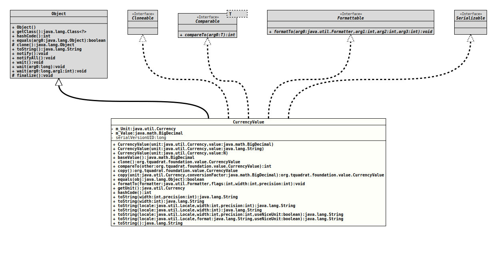

- All Implemented Interfaces:
Serializable,Cloneable,Comparable<CurrencyValue>,Formattable
A value type for currency values.
As there is no constant conversion between currencies, this value type
not implementing the interface
DimensionedValue.
- Author:
- Thomas Thrien (thomas.thrien@tquadrat.org)
- Version:
- $Id: CurrencyValue.java 1105 2024-02-28 12:58:46Z tquadrat $
- Since:
- 0.0.4
- See Also:
- UML Diagram
-

UML Diagram for "org.tquadrat.foundation.value.CurrencyValue"
{kind=link}
-
Field Summary
FieldsModifier and TypeFieldDescriptionprivate final CurrencyThe unit for the value.private final BigDecimalThe numerical value for this instance.private static final longThe serial version UID for objects of this class: -2075489505691464486L. -
Constructor Summary
ConstructorsConstructorDescriptionCurrencyValue(Currency unit, String value) Creates a newCurrencyValueinstance.CurrencyValue(Currency unit, BigDecimal value) Creates a newCurrencyValueinstance.CurrencyValue(Currency unit, N value) Creates a newCurrencyValueinstance. -
Method Summary
Modifier and TypeMethodDescriptionfinal BigDecimalReturns the amount.final CurrencyValueclone()final intcompareTo(CurrencyValue other) final CurrencyValuecopy()Creates a new copy of this value.final CurrencyValuecopy(Currency unit, BigDecimal conversionFactor) Creates a new instance ofCurrencyValuefor a differentCurrency.final booleanfinal voidfinal CurrencygetUnit()Returns the unit for the value.final inthashCode()final StringtoString()final StringtoString(int width) Provides a String representation of this valuefinal StringtoString(int width, int precision) Provides a String representation of this valuefinal StringProvides a String representation of this valuefinal StringProvides a String representation of this valuefinal StringProvides a String representation of this valuefinal StringProvides a String representation of this value
-
Field Details
-
m_Unit
The unit for the value. -
m_Value
The numerical value for this instance. -
serialVersionUID
The serial version UID for objects of this class: -2075489505691464486L.- See Also:
-
-
Constructor Details
-
CurrencyValue
Creates a newCurrencyValueinstance.- Parameters:
unit- The unit.value- The value; only absolute (positive) values are allowed, a sign will be stripped.
-
CurrencyValue
Creates a newCurrencyValueinstance.- Parameters:
unit- The unit.value- The value; it must be possible to parse the given String into aBigDecimal.- Throws:
NumberFormatException- The provided value cannot be converted into aBigDecimal.
-
CurrencyValue
Creates a newCurrencyValueinstance.- Type Parameters:
N- The type ofvalue.- Parameters:
unit- The unit.value- The value.
-
-
Method Details
-
baseValue
Returns the amount.
- Returns:
- The numerical value for this instance of
CurrencyValue.
-
clone
-
compareTo
- Specified by:
compareToin interfaceComparable<CurrencyValue>- Throws:
IllegalArgumentException- The currencies for both values are different.
-
copy
Creates a new copy of this value.- Returns:
- The copy.
- See Also:
-
copy
Creates a new instance ofCurrencyValuefor a differentCurrency.- Parameters:
unit- TheCurrencyfor the new value.conversionFactor- The value for this instance multiplied with the given factor results in the value for the instance.- Returns:
- The new instance.
-
equals
-
formatTo
The precision is applied to the numerical part only. The width includes the currency symbol, too.
- Specified by:
formatToin interfaceFormattable- Note:
-
- In case the
formatterargument isnull, this method throws aNullPointerExceptionand not the usualNullArgumentException, because this method is usually called by instances ofjava.util.Formatter, and those do not know about our special exceptions.
- In case the
- Throws:
NullPointerException- Theformatterargument isnull.- See Also:
-
getUnit
Returns the unit for the value.- Returns:
- The unit.
-
hashCode
-
toString
Provides a String representation of this value, in the format
<numerical value> <currency symbol>and for the default Locale, like "
4.50 €", where the Locale determines the decimal separator.The precision is applied to the numerical part only. The width includes the currency symbol, too.
- Parameters:
width- The minimum number of characters to be written to the output. If the length of the converted value is less than the width then the output will be padded by ' ' until the total number of characters equals width. The padding is at the beginning, as numerical values are usually right justified. Ifwidthis -1 then there is no minimum.precision- – The number of digits for the mantissa of the value. Ifprecisionis -1 then there is no explicit limit on the size of the mantissa.- Returns:
- The String representation for this value.
-
toString
Provides a String representation of this value, in the format
<numerical value> <currency symbol>and for the default Locale, like "
4.50 €", where the Locale determines the decimal separator.The precision is taken from the
currencyand applied to the numerical part only. The width includes the currency symbol, too.- Parameters:
width- The minimum number of characters to be written to the output. If the length of the converted value is less than the width then the output will be padded by ' ' until the total number of characters equals width. The padding is at the beginning, as numerical values are usually right justified. Ifwidthis -1 then there is no minimum.- Returns:
- The String representation for this value.
-
toString
Provides a String representation of this value, in the format
<numerical value> <currency symbol>for the given
Localethat determines the decimal separator, like "4.50 €" vs. "4,50 €".The precision is applied to the numerical part only. The width includes the currency symbol, too.
- Parameters:
locale- The locale to use.width- The minimum number of characters to be written to the output. If the length of the converted value is less than the width then the output will be padded by ' ' until the total number of characters equals width. The padding is at the beginning, as numerical values are usually right justified. Ifwidthis -1 then there is no minimum.precision- – The number of digits for the mantissa of the value. Ifprecisionis -1 then there is no explicit limit on the size of the mantissa.- Returns:
- The String representation for this value.
-
toString
Provides a String representation of this value, in the format
<numerical value> <currency symbol>for the given
Localethat determines the decimal separator, like "4.50 €" vs. "4,50 €".The precision is taken from the
currencyand applied to the numerical part only. The width includes the currency symbol, too.- Parameters:
locale- The locale to use.width- The minimum number of characters to be written to the output. If the length of the converted value is less than the width then the output will be padded by ' ' until the total number of characters equals width. The padding is at the beginning, as numerical values are usually right justified. Ifwidthis -1 then there is no minimum.- Returns:
- The String representation for this value.
-
toString
Provides a String representation of this value, in the format
<numerical value> <currency symbol>for the given
Localethat determines the decimal separator, like "4.50 €" vs. "4,50 €".The precision is applied to the numerical part only. The width includes the unit symbol, too.
- Parameters:
locale- The locale to use.width- The minimum number of characters to be written to the output. If the length of the converted value is less than the width then the output will be padded by ' ' until the total number of characters equals width. The padding is at the beginning, as numerical values are usually right justified. Ifwidthis -1 then there is no minimum.precision- – The number of digits for the mantissa of the value. Ifprecisionis -1 then there is no explicit limit on the size of the mantissa.useNiceUnit-trueif the methodunitSymbolForPrinting()should be used to retrieve the unit symbol,falseif the usual one is sufficient.- Returns:
- The String representation for this value.
-
toString
public final String toString(Locale locale, String format, boolean useNiceUnit) throws IllegalFormatException Provides a String representation of this value, in the format that is defined by the provided format String.
That format String must contain exactly one '%f' tag and one '%s' tag; the first takes the numerical value, the second the unit.
The provided
Localedetermines the decimal separator and the optional thousands separator.- Parameters:
locale- The locale to use.format- The format String.useNiceUnit-trueif the methodunitSymbolForPrinting()should be used to retrieve the unit symbol,falseif the usual one is sufficient.- Returns:
- The String representation for this value.
- Throws:
IllegalFormatException- The provided format String is invalid.- See Also:
-
toString
-